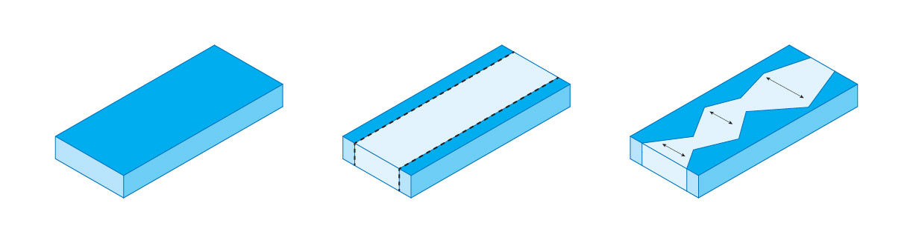
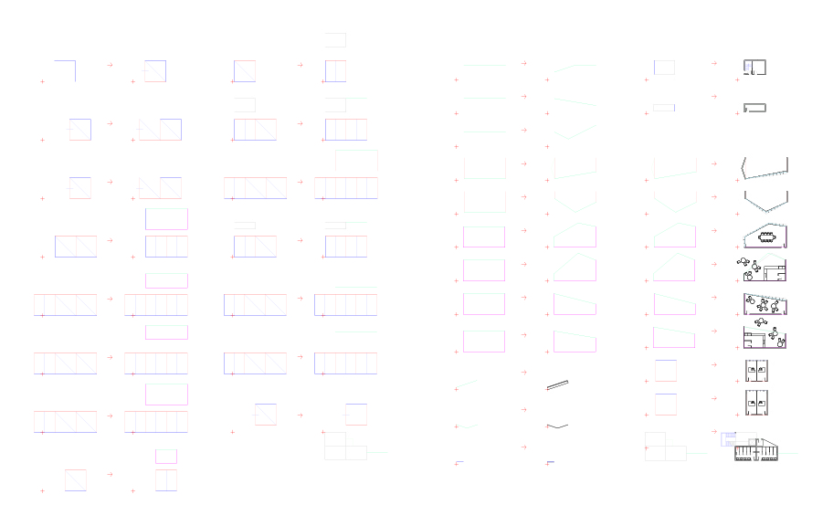
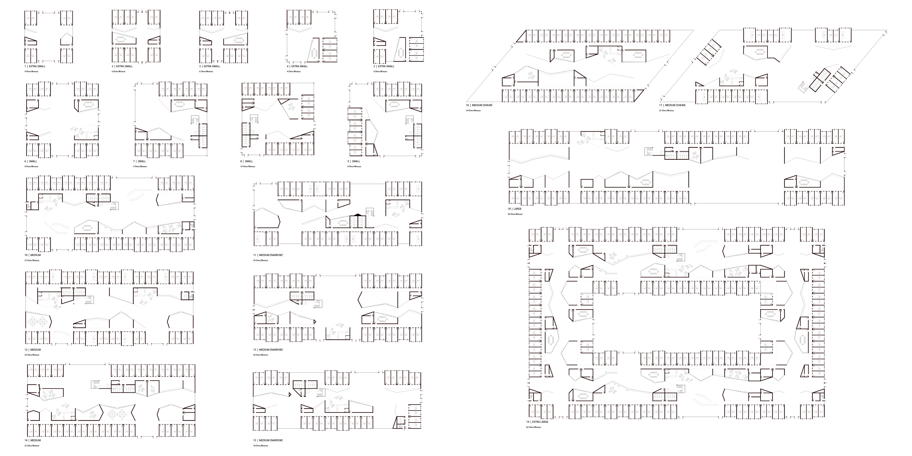
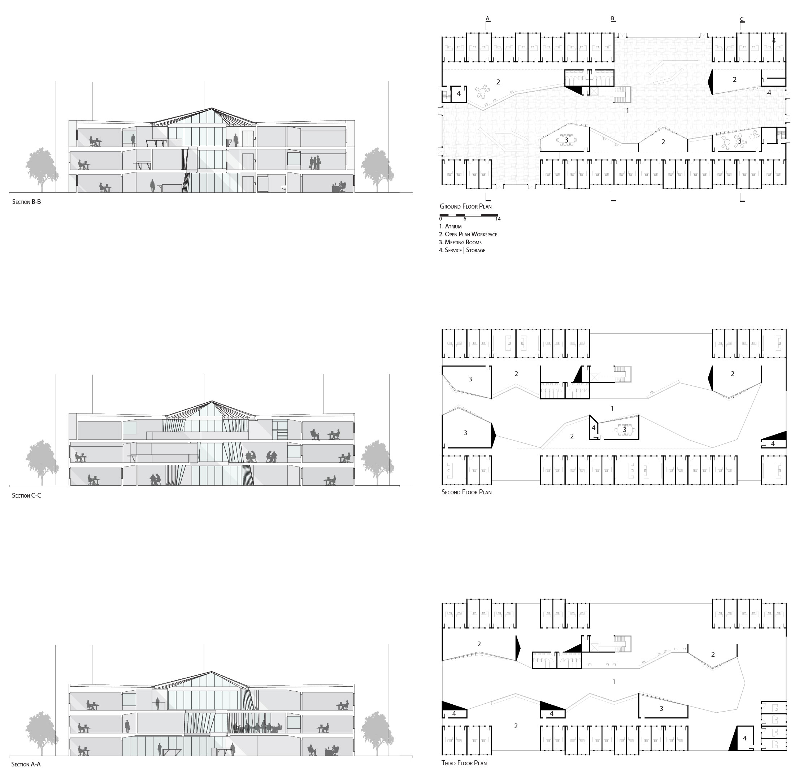

Derivation, Form-finding, and Structural Analysis in Catenary Derivate Shells
Undergraduate Honors Thesis at the University of North Carolina - Charlotte
Laudeman, Sara M
This is a condensed representation of the work completed at the University of North Carolina
at Charlotte in partial fulfillment of the requirements for honors notation in the Arts & Architecture, Mathematics and
Statistics, and University Honors Programs. The full paper is available on request.
Abstract
The work of Heinz Isler poses a curious challenge: by inverting the natural shapes of hanging fabrics, Isler created a series of tensile-turned-compression structures. These forms rely on the natural shape of hanging fabrics and catenary curves. Exploring freehanging membrane catenary surfaces will lead to the development of a series structural and load-bearing analyses of varied taxonomies based on form-finding exercises. In the following research, investigations will include parameters such as: shape basis, maximum height, surface area, dimensions, and material rigidity.
The experimental design of the project will be carried out via computational and physical modeling, as well as numerical analysis. It will explore the differences between Isler’s original forms, hanging fabric models, and solids of extrusion in form-finding and load-analysis. A single material will be used throughout the analysis to preserve relationships between forms and their results while maintaining a comparable data set. Form-finding will be based on mathematical manipulations of forms and surfaces, based on derived and known formulas for these surfaces. Following these steps will be a digital structural analysis, which will be carried out via Finite Element Analysis (FEA). Third, there will be a set of physical models at various scales produced and tested against the results of the FEA exploration. Finally, a series of conclusions will be drawn detailing the findings with respect to design, computation, and mathematical implications.
It bears noting that this project is primarily an applied exploration of mathematics within the field of architecture. While the tools used are not new, and the applications of these tools are similar to other applications, the real interest in this project is in the implications of mathematical thinking and applications within architectural design, and in the overlap of aesthetic design and structural stability. The questions this project seeks to answer include: Of the proposed forms, which have the most realistic applications in design? In structural stability? Which form is most readily manipulated mathematically without losing its structural stability? What do these forms offer in the way of aesthetics?
Mathematics holds its own aesthetic, however the direct overlap between mathematics and architecture often becomes a blurred area between art and science. Here, analytical modeling and surface development will be coupled with numerical methods to address the construction of surfaces and their structural properties. This information can be capitalized upon by the use of Finite Element Analysis (FEA). Thus, an experimental method can be constructed to determine structural stability across a variety of shells. Additionally, the manipulation of these forms can be addressed, which begins to define the overlap with the aesthetic concerns rooted in architectural concerns.
At the end of the World Wars, there was a shift towards the organic and simple forms of the mid-century modern movement. With this came a renewed interest in thin shell concrete structures.[1] Born in 1926, Heinz Isler stepped onto the scene at this stage. With his first project as a shell-builder occurring in 1954, Heinz Isler was a Swiss structural engineer who helped define the field of thin shell concrete domes. In the late 1950s through the turn of the century, Isler worked on the design and construction of monolithic concrete domes. While the name of Heinz Isler carries a great deal of weight in the field, it is equally important to address some of the other architects and engineers who helped develop the theory and practice of concrete shell structures. In the 20th century, an enormous amount of progress was made in fabrication techniques and analytical methods, and is demonstrated in the works of Eduardo Torroja y Miret, Pier Luigi Nervi, Félix Candela, and Isler, to name a few.
Heinz Isler is the focus of this work. While Isler had a mathematical method to his shells, the particulars are not well-known. However, from what is known, a series of conclusions based on membrane analysis and structural mechanics can be drawn. The most consequential of these is the shift towards thinner shells as methodologies and material science progressed. For instance, a classical shell had a ratio of 1:50. Eggshells are around 1:100. Modern shells typically have a slenderness ratio in excess of 1:500, and quite often approach or exceed a ratio of 1:800.
So let us now consider what is known of Isler’s equation and method for constructing these thin shell forms. Isler claimed the following equation:
Where:
E = modulus of elasticity of concrete
t = thickness of shell
r = radius of shell, which is actually the median of the two radii of curvature
x depends on the specific shape, from 3 for a cylinder to 2 for a sphere
C is a constant defined as α · β · γ
α, β, γ are specific to the form, with α being found from the solution of the equation, β is a margin of error (approx. 3), and γ is specific to the shape.
s = safety factor for the effective load
Peff = effective load
The development of town halls and office buildings can be traced through the years since Durand. Consistent across all of these examples are offices, atria or central halls, and shared meeting spaces.
The development of the massing scheme for the language of municipal offices that this project proposes is below. A form should, in the Durandian manner, capture the block or site. Following this, the edges of the form should be captured as a rigid office band. Finally, the interface between office and atrium reacts - articulating the common space in the center band of the building.
Much as the rules for the Durandian Town Halls were tweaked, the rules can be changed to accomodate this new typology. The constructive application of this rule set leads to coherent plans consisting of offices, central atria, and flexible work spaces.






As a proof of concept for this scheme, consider a building constructed of three of these variations. For this, consider a site in Atlanta. The block between Ivan Allen Jr Blvd. and W Peachtree Pl. NW is rectangular and currently a surface parking lot. This space allows a good demonstration of the potential of a this language of municipal offices to capture the site in a sensible manner.
The massing of the four main elements of the language reveals the underlying logic. The office bands capture the envelope condition, creating open spaces for gathering on upper floors and entry conditions on the lower level. The core stacks vertically through, hosting bathrooms, stairs, elevators, and storage. The semi-public meeting spaces and open plan offices work their way between offices and the atrium as an interstitial space between the two, and the atrium is a multifaceted construct that carves its way through the project.
In combining three variations on a site, the alg orithmic generation is grounded in reality. The upper floors are edited to define the balcony edge of the atrium condition. Here, the core helps to define a public landing with work spaces and open spaces for gathering and public interaction. In section, the atrium winds its way through the space. Overhead, light filters down across the balconies as well as spilling in from the breaks in the offices along the perimeter of the building. Overhanging levels create sheltered spaces below which provide open plan work space, public desks and benches, and a cafe on the ground level. Canted glass on the meeting rooms interfaces with the atrium, pushing the space outwards, shifting throughout the project in an almost crystaline form, highlighting the reaction between public and private within the project.

[1] Tang, Gabriel. ”An Overview of Historical and Contemporary Concrete Shells, their Construction and Factors in their General Disappearance.” International Journal of Space Structures 30, no. 1 (2015): 1-12.